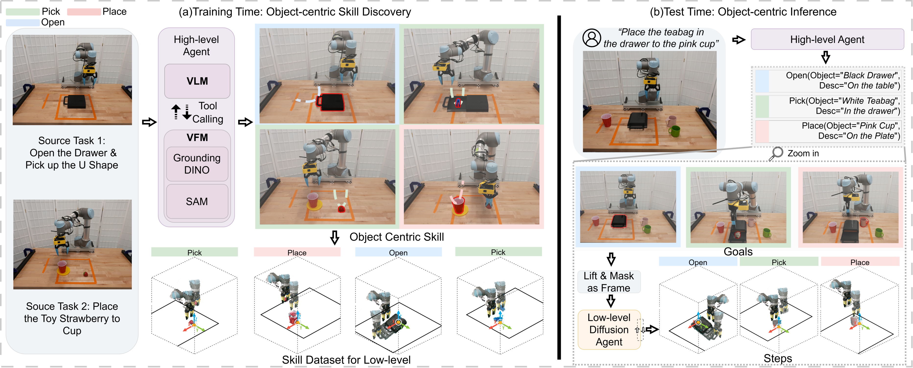

International Conference on Learning Representations (ICLR), 2026
I am a research assistant in the Khoury College of Computer Science at Northeastern University, advised by Prof. Robert Platt in The Helping Hands Lab. I completed my Master's degree in the Department of Electrical and Computer Engineering at Northeastern University, where I had the opportunity to work with Professor Hanumant Singh. My research interests include robot learning, policy learning, and robotic arm manipulation.
* indicates equal contribution, † indicates equal advising
